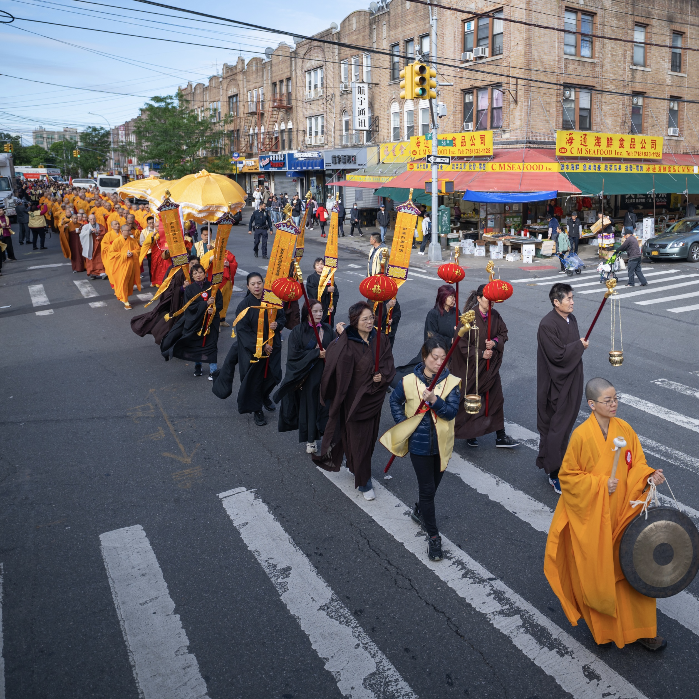

2025 Highlight · 2025年亮点
New York Buddhist Culture Festival 2025
2025年纽约佛教文化节
The 2025 New York Buddhist Culture Festival brought together practitioners, community members, and guests from all walks of life for dharma ceremonies, cultural performances, and shared celebration. It was a vibrant showcase of Buddhist heritage and its enduring relevance in a modern, multicultural city.
2025年纽约佛教文化节汇聚了来自各界的修行者、社区成员和嘉宾，共同参与法会仪式、文化表演与庆典活动。这场盛会生动展现了佛教文化遗产及其在现代多元城市中的持久意义。


